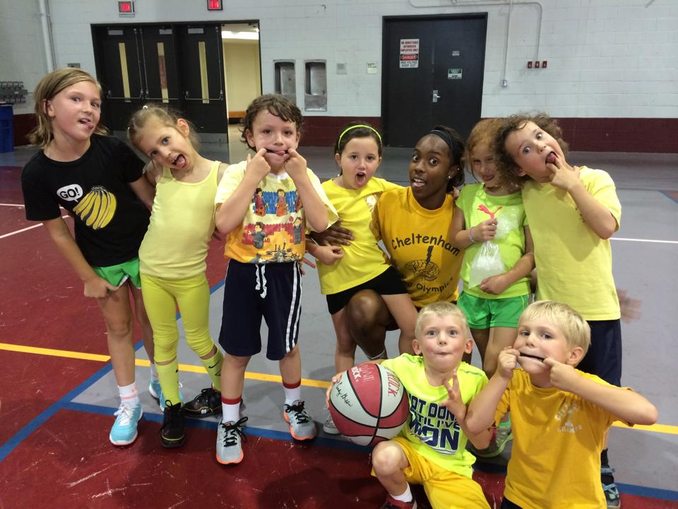
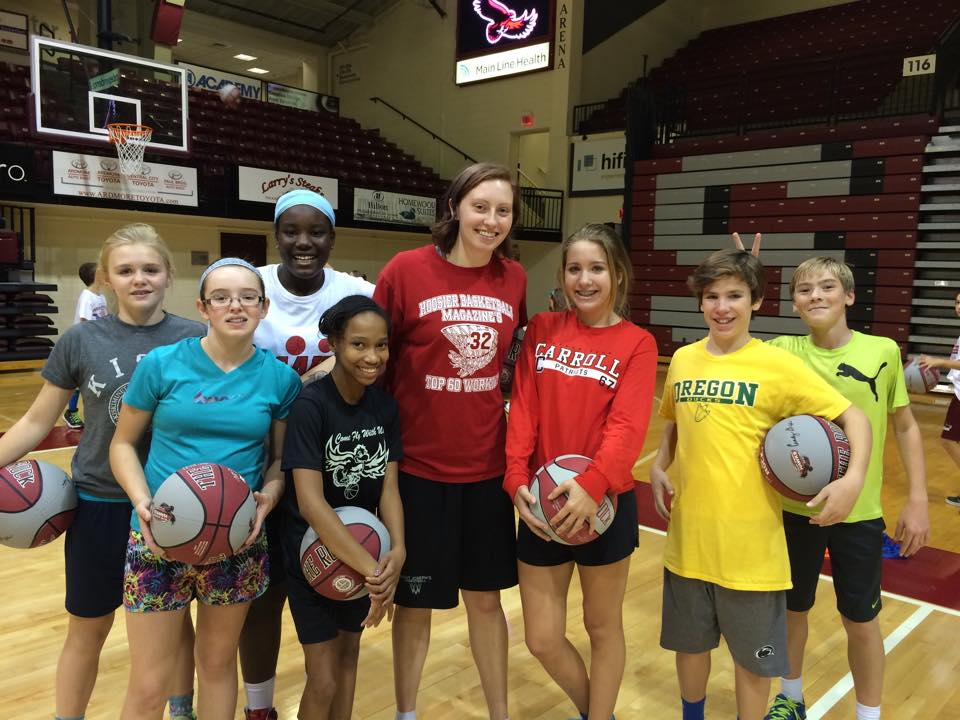

CHOP Cleft Lip Event
Summer Camp 2014
Kids Club 2014
Saint Josephs Womens basketball team takes alot of pride in giving back to the community. Throughout the year they do many different activites to help out. They volunteer at the Childrens Hospital of Philadelphia when there is special events such as CHOP prom. CHOP prom is for kids who may not ever get a chance to go on their school's prom so they hold one at the hospital. Kids get dressed up and have a fun night at the hospital, the basketball team dance the night away with patients and make sure that they are having a great time. CHOP also has special events for different kind of patients so one week they may have a special event for patients with cleft lip, and the players will work stations such as finger painting, making cotton candy and racing kids on the obstacle courses.
Basketball has changed the lives of many people and SJU womens basketball tries to inspire other kids to play basketball as well. Throughout the year they hold multiple clinics and camps to introduce kids to basketball and get them playing. In the summer there is 2, 1 week long camps where kids work on there skills, interact with the players and learn basketball tips and tricks. SJU womens basketball also go to different schools to give them a glimpse of what it is like to be a basketball player at SJU. It is important to get involved with the community, because they are our support system and it is only right to give back to the people that give us so much.
Kids Club 2014